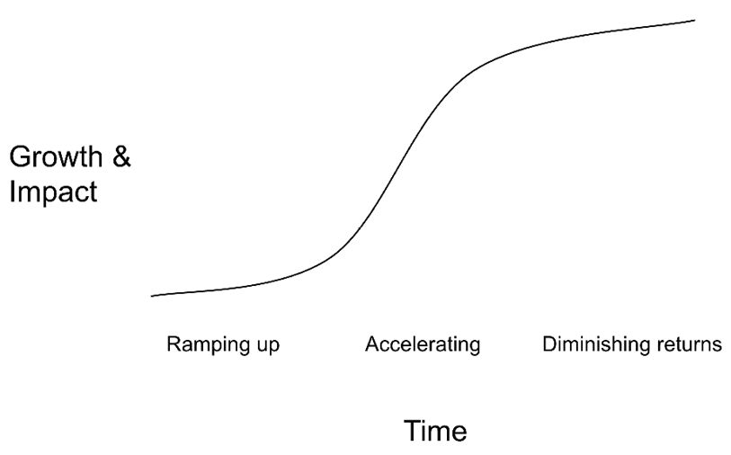
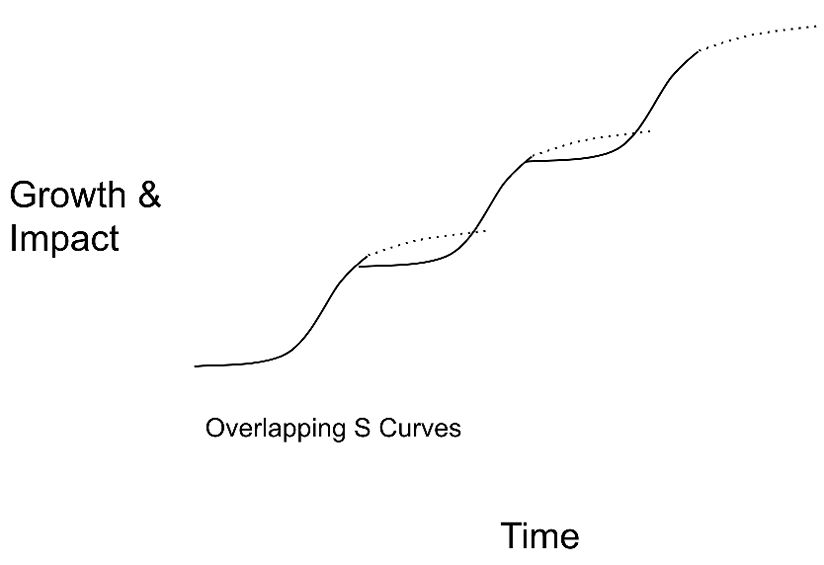

Chapter 34
Andrew was frustrated by the feedback from his review. "He needs to invest more in sharing status updates and findings across the company," his manager stated. That kind of self-promotion felt artificial and political. Why should he waste time trying to impress other people? Why didn't his boss appreciate all of his hard work?
I wish I could tell you that he doesn't need to do this—and that all you need to do to get promoted is to work hard and ship great products. Listen to your users. Process data. Inspire your developers. Collaborate with marketing and sales. Develop your scope, autonomy, and impact.
No doubt, those are critical pieces—hopefully enough. But, just like how the best candidates don't always get the offer, the best employees aren't always the ones who get promoted. There are false positives and false negatives in both groups.
Andrew's manager had given him good advice. Product managers can only influence as far as their credibility reaches. When it's done with tact, people across the company appreciate any extra signal about which people are good at their jobs. When he started hosting learning lunches and sending his status updates more broadly, he was surprised to see how coworkers started giving him the benefit of the doubt and being more willing to help his team.
Your manager has a major influence on your career. It's almost impossible to get a promotion or a raise without having your manager on your side. A good manager can act as your sponsor, finding you stretch opportunities that expand your influence and improve your skills.
Your manager is a human being, just like you. I know, sometimes they might seem almost god-like, and sometimes, well, the opposite. But they are only human, and it's worth remembering that.
They have the same types of biases, fallacies, emotions, and flaws as everyone else. Just because they have more experience and authority than you doesn't mean they'll always do the right thing. Even the best managers are susceptible.
What could these flaws look like?
Once you realize that managers are only human, you can find the best ways to partner with them to achieve your career goals. You can "manage up" with the collaboration and customer empathy skills you already have.
Caveat: While all managers have some problems, you shouldn't stick it out with a terrible manager. See "Manager Problems" in Chapter 34 for more about bad situations.
Empathize with your manager's mindset
If you treat your career like a product, then you can think of your manager as one of your customers. The better you can understand your manager, the easier it will be to form a strong relationship and get the support and sponsorship you want.
If you haven't already, go back and read Part G: People Management Skills to learn what the people management job is like. You'll see some of the challenges that managers face, and you might be surprised by some of the expectations of the role.
You'll also want to learn about your specific manager.
You can treat each interaction with them as an opportunity for customer research. Why did they push so hard for that one change? What made them add that new process? What assumptions are behind the strategy they presented? Which PMs do they praise, and for what?
When you really understand and empathize with your manager, your relationship with them will improve. You'll get better at interpreting their questions and suggestions. They'll feel like you understand them. It will be easier to deliver what they consider great work, and all of this will increase the chance that they see you as someone who's exceeding expectations.
Partner with your boss on your career goals
Good managers want to support your career ambitions, but you need to be proactive about sharing your goals and looking for your own opportunities. Especially at the more senior levels, you'll need to take the lead on finding possible stretch projects and deciding what to take on. Don't assume that your manager knows your career ambitions or that they will find you the type of assignments you need to keep advancing. Speak up!
Your manager might feel uncomfortable in career conversations, so you don't want to make the conversation combative. If you appear insulting or overly critical of them for not promoting you, they might hold it against you.
To avoid this, frame the conversation as future-looking:
I'd love to become a director eventually. What areas should I focus on so I'll be ready when the opportunity comes up?
If you're early in your career, you can propose that the two of you brainstorm ways that you can build the skills. If you're more advanced, you'll want to show your seniority by proposing your own suggestions for how you can build and demonstrate the required skills. Treat the conversation as a partnership.
If your manager claims you're missing a skill that you believe you have, don't argue. Instead, discuss how you can demonstrate those skills. Get curious, be coachable, and stay open to feedback.
Remember: Your manager chooses where to invest their time and energy; if they think you'll listen to them and learn from them, they're more likely to think you're worth the investment.
That's why this approach works well. It takes the pressure off your manager and doesn't force them to commit. At the same time, it makes your intentions clear and demonstrates your willingness to learn. When a great stretch opportunity comes up, they'll know you're interested in it.
A sponsor is different from a mentor. Mentors help you develop your skills and give you advice, while sponsors advocate for you and help you advance. A sponsor might recommend you for a promotion, hire you into a larger role, or connect you to people in their network. They are people who believe in you and give you the opportunities you need to advance.
The best people to be your sponsor are usually your manager or someone higher in your reporting chain. They're close enough to know your skills, and high enough to have access to opportunities. Not every manager is a great sponsor, however; some don't have the connections, and others don't do a lot of recommending. You'll need to look for a good sponsor, work at building the relationship, and make sure they know what you're looking for.
Much like for mentors, sometimes, the relationship evolves naturally—and other times, it's useful to explicitly ask for this.
Buddy with your boss on their work
One of the best ways to learn PM skills is to watch them in action. Strategic skills, in particular, are difficult to learn if you don't have good examples. Luckily, many people enjoy having a work buddy, whether it's having a thought partner to bounce ideas off of or just a scribe to write down notes and put slides together. In either case, you'll get a front-row seat to how it's done.
Talk to your boss about what work they have coming up, and ask if they'd like any help with it. Maybe you can help put together a kickoff presentation or slides for a board meeting. Frame it as help for them, and pay attention to make sure that your "help" isn't creating more work or frustration for them—e.g., dragging them into long arguments that they don't want to have.
To help these opportunities come to you, you can begin paying attention to what your boss is working on and thinking about how you would handle it. You'll get to see how it plays out for them, and if they bring it up, you'll have useful thoughts to share.
Make sure your manager knows how your work is going
In "Make it their responsibility to communicate proactively with you" in Chapter 29 , we talked about the challenge of managing PMs from the manager's point of view.
If you're not communicating proactively with your manager, you'll end up in one of two bad situations:
You might be tempted to blame your manager if this happens, but the blame—and the fix—lies with you. You need to realize that your manager is not a mind-reader, and therefore, you must proactively share your work with them. Without this, your manager will either be unable to offer you autonomy or will not be able to fulfill their own responsibility to oversee your work.
Much of a PM's work happens privately or behind the scenes, so the only way your manager will be aware of the challenges you've faced is if you tell them. If you let your manager know about potential problems early, they won't feel the need to hunt for your team’s problems themselves. If you keep them up-to-date, they'll represent your work to the rest of the company and share the context your team requires.
When you speak with your manager about your work, keep these three goals in mind:
All of these goals apply to every communication, whether the news is good, bad, or neutral. When you combine these goals together, you're able to self-promote without seeming arrogant and rubbing people the wrong way.
An easy approach to combine all three goals is to use this three-part template:
Here's what's happening: <The current challenge>.
This gives them the context they need. You can talk about a designer missing deadlines, a surprising A/B test result, great ideas that were brought up in a brainstorming session, a launch-blocking bug you discovered, a new request from the sales team, or any other interesting pieces of work. Instead of just a basic status report, combine the status with the details of a recent discovery, challenge, or surprise.
Here's how I <handled it/am handling it/am thinking of handling it>.
This promotes your skills and accomplishments. Sometimes, you'll be really proud of the clever way you handled a challenge. Other times, you'll feel lost, but you can take ownership of the problem and share where you're stuck. Sharing your plan lets your manager work with you as a partner and helps them see your skills. Otherwise, they might suggest solutions you've already thought of and get a false impression that you didn't know what to do. If you ask for help without having any plan of your own, you could come across as very junior or low-potential.
This invites them to share their suggestions. This invitation softens the self-promotion factor in the second part by putting it in the context of growth and learning. It makes it easy for your manager to give you feedback they might have otherwise held back; if you don't seem open to feedback, they might feel uncomfortable pushing it on you. The phrasing also gives them the option of saying, "That sounds great!"
Managers can get annoyed when PMs are too focused on their personal ambitions. It can seem like you're trying to succeed at the expense of others, rather than with your team. For a high-performing team, individuals need to put the team first. If you're too focused on the next promotion, you might do a bad job on your current work.
This leads you to a catch-22:
This is a little bit of a song and dance. Of course, you care the most about yourself and would leave the job if it wasn't good for you. But, being blatantly obvious about that can be interpreted as a threat and could damage your relationship with your manager, as well as with your team.
Whenever possible, try to frame your requests in terms of benefits to your team or company. Ask about ways to improve your skills rather than bringing up promotions. Explain what you could deliver for customers with a bigger team. Offer to lighten your manager's load by taking on some of their reports.
In Lean In , Sheryl Sandberg shared how she framed her aggressive salary negotiation as a team benefit: Facebook would benefit from her strong negotiation skills once she was negotiating for them. By discussing what she could do for the company, she was able to negotiate for the salary she wanted without creating any animosity.
There are exceptions to every rule, however, and it will sometimes make sense to advocate for yourself directly, especially in the context of explicit career conversations.
In those instances, it's helpful to start by getting your manager into the mindset of being on your side and supporting your growth before you make your request. Keep it forward-looking to avoid putting them on the defensive.
Imagine your company is hosting a big conference and you'd like to be on the planning committee. You found out that managers were asked to recommend people on their team, and you weren't recommended.
Don't : "I can't believe you didn't recommend me for the conference planning committee!"
Do : "I'd love your advice. Could we have a career growth check-in? Great! I noticed there's a conference planning committee and I think it would be a great growth opportunity for me. Could we have a chat about it and see if you could recommend me for it?"
Use your judgment and pay attention to how your manager reacts. Some managers will require an even subtler approach.
Feedback is critical for career growth because it's personalized to you and your situation. Every manager, team, and promotion committee puts slightly different weights on what they value, so you'll need feedback to find the perceived gaps.
Feedback like, "You need to be more decisive," or, "be more customer-focused," can feel really difficult to act on. Breaking it into three steps can make it actionable:
When you go through these steps, you'll often discover that the real problem is very different from what the initial feedback implied.
Getting direct feedback from your peers, manager, and manager's peers is one of the best ways to grow quickly. Unfortunately, many people shy away from giving you the feedback you really need to hear.
To reliably get useful feedback about your work, you need to make it comfortable for people to speak with you honestly. Here are some ways to do that:
Remember that feedback can be as uncomfortable to give as it is to receive. Your peers may worry that they've tarnished the relationship by being "mean," especially if they're more junior than you. Show them that you appreciate and value their feedback.
Building relationships with your manager's peers
Don't underestimate the influence your manager's peers can have on your career. They can provide new perspectives on your work, dedicate resources for your initiatives, and support your promotion. These relationships are particularly important during reorganizations or if your manager leaves the company.
So, how can you build these relationships? Aaron Filner, Director of Product Management at Google, shared some advice:
People sometimes undervalue sending newsletters, status updates, and launch updates far and wide. However, they are read more than people realize. It's important to craft them in a way that people who are far from your project can understand what was done and why it was interesting.
In terms of projects, any time there's interaction or partnership between teams, it's an opportunity to create an impression on that adjacent leader. It gives you an excuse to proactively reach out to them. If you proactively solicit input, people are usually willing to engage.
Once you have established these relationships, you can also ask for advice. People are often happy to give advice, and your manager's peers will be able to give you an outsider's perspective.
Choosing the right place at the right time
If you speak with PMs who have had successful careers, you'll repeatedly hear how much being in the right place at the right time has helped them. While a lot of that comes down to luck, you can be intentional about how you choose your companies and teams.
Think about the "cool" tech companies. We're not talking about which ones you think of as having the best technology or culture. We're talking about the public perception of which companies are cool, selective, or impressive; the ones that, for example, the top students from the top universities are clamoring to go to.
Spending time at one of the "top reputation" companies can give you a big boost in the long run. Is this superficial, perhaps even unfair? Yes. But nonetheless, collecting such a name on your resume can help you in many ways:
This doesn't mean that you must work for a big brand-name company, or that it's always the right decision for your career goals or for your life overall. But we encourage you to consider joining a brand-name company early in your career, even if your long-term goal is more startup-focused.
Fast-growing companies are usually the best places to grow your career.
While it would be amazing to join a small startup right before it takes off, you don't need to be that clairvoyant. Fast-growing companies are, by definition, hiring many people, and so they're easy to spot. You can follow tech news and ask around to learn about the hot companies. If you know recruiters or managers, you can ask which companies they're losing candidates to.
Fast-growing companies are great for your career because as the company grows, your role gets bigger and new opportunities open up. Your knowledge of the product and the trust you've built up will let you take on roles you wouldn't otherwise be qualified for. Things move faster, so the longer you stay, the more new experiences you get, and the more you learn.
However, be aware that these companies will also likely go through growing pains, where their rapid growth causes a certain level of dysfunction. It could also evolve into a company you "don't recognize"—one that's very different from the one you were so excited to join.
Choosing a startup is much riskier than opting for a large or medium-sized company.
For example, one person joined a hot startup that went bankrupt because it cost more to deliver the service than customers were willing to pay. Another found out his equity was worth $0 after the company was sold for $100M because of liquidation preferences. Another saw her startup dissolve after an ethical scandal.
There's no magic formula for choosing a great startup, but here are some things to consider:
It can be useful to see a startup much like an investor would. After all, you're investing your time, emotions and career growth in it. If you wouldn't believe in it as an investor, perhaps it's not a good fit as a career either.
The first PM or head of product at a startup frequently doesn't work out. Many PMs quit in a huff when they realize the role is nothing like what they had expected. Product-minded founders rarely give up any control to the new PM. Non-product founders rarely accept the cultural changes that are necessary to do product well. If you want things to go well, you need to be realistic about the challenges you'll face and the scope of your autonomy. The role can be immensely rewarding over time, but you don't get to shape everything to your liking on day one.
Gemmy Tsai, head of product at Solv and former head of product at Hired, recommends having an explicit conversation with the startup's founders about what they want in the role and how it might evolve to see if it matches what you're looking for. Then, hold back on the impulse to immediately create a new strategy:
The best way to build trust is to prove you can execute. It's about building that foundation of trust and then layering on the big strategic stuff because that's always the last thing they want to give up.
In my own experience as the first PM at Asana, I credit my success to the strong working relationship I formed with the product cofounder, Justin Rosenstein. Our strengths and weaknesses complemented each other. Even so, I had some bumpy experiences as I learned not to shut down his ideas and, instead, build on top of them. Unlike at a larger company where I could become the true expert in my area, at Asana, I'd never surpass JR's depth of vision. So, instead of trying to take over the product strategy, I looked for ways to add value to it. That approach helped me build trust and set me up to grow with the company.
Even within a company, the team you're on matters tremendously:
Choosing a team with an appropriate scope is especially important to advance at higher levels. Aarti Bharathan, Senior Director at PayPal, was promoted from GPM to Director after taking on a project that grew to a huge scope:
My skip-level manager told me he had a problem around what to do with all the marketplaces. I said I'd go figure it out. I started from scratch and ended up creating a whole new product line.
After this, it was obvious to everyone that Bharathan deserved the promotion.
Career growth within a role tends to follow an S curve. You ramp up, have a period of accelerating growth where you're learning a lot and making a big impact, and eventually hit diminishing returns.

It usually makes sense to stay when you have a great relationship with your manager, you're growing quickly, you're learning a lot, you believe in your product, and your company is doing well. It's especially bad to leave before you ship something meaningful and see the results.
On the other hand, if you've been in the same role for many years, you might be able to grow more quickly and make more money elsewhere. There are a few factors at play:
If you want to learn whether you could be making more money, you can interview at other companies and see if your current company would make a counter offer. Before you do this, however, assess your company's counter-offering culture. Some companies take an ardent stance against counter-offering, figuring that there's no use begging you to stay if you want to leave.
When you switch roles or companies at the point where you hit diminishing returns, you create overlapping S curves and grow much faster.

If you're not sure whether you're hitting diminishing returns, speak with some trusted mentors. Sometimes, the plateau is real, and other times, it represents a valuable "growth edge" where you're on the cusp of major growth.
Whenever you choose to move on, it's important to always leave on a good note. The tech industry is a small world and you may end up working with your former coworkers again at one point; don't burn those bridges.
When you receive an offer, know that it's not set in stone; companies expect you to negotiate. This can be intimidating since the company negotiates offers every day, but you rarely do. Luckily, there are a lot of resources and information available, scripts to follow, and even negotiation specialists you can work with.
It's a good idea to become familiar with these in advance so you'll know how to handle traps like exploding offers. You might also want to check out:
Negotiating is a useful skill to develop, even beyond this specific offer. Here are a few tips to get you started:
Most of all—just do it. Some people are so hung up on finding the "right" way to negotiate ("Do I use email or the phone?" "Should I act excited about the offer or concerned?" etc.) that they just avoid it entirely. It's much more important that you try to negotiate than that you follow every piece of negotiating advice.
If you're still reluctant to negotiate, think about it this way: A single "uncomfortable" conversation will earn you at least a few hundred, but, often, thousands of dollars. It's a no-brainer.
So, pick up the phone, or write an email, or have someone else write an email and you just hit send. But, do it.
Pop Quiz: In a negotiation, should you name the first number?
Most people—and conventional wisdom—say no. Let the other person name the first number! You don't want to show your cards too early! See what the other side is thinking!
Some research, however, indicates something different. As Adam Grant, Wharton negotiations professor and author of Give and Take , says in his WorkLife podcast: 5
First offers serve as anchors. They set the hook for the negotiation, and it's hard to escape the pull. One comprehensive analysis of negotiation experiments showed that every dollar higher in the first offer translates into about 50 cents more in the final agreement.
People often do better in negotiations if they offer the first number. If you're surprised, consider this hypothetical scenario.
But does this apply to you negotiating salary? That's where it gets tricky.
Many candidates don't know their own worth. If you name the first number, you can anchor the company to a much higher number—or you could low-ball yourself, or you could throw out an unrealistic ask.
This is why many people advise to "play it safe" and avoid naming the first number. Then, you just take the company's number and add extra to it. 6
There is no clear-cut answer to this dilemma. Your best bet is probably to do enough research that you're well-informed about typical salaries, so you can avoid undershooting. But if you can't do that, then you might wait until the company throws out a number. 7
Or, there's another option: "The easy solution is to anchor with a range," Adam Grant suggests. A range allows you wiggle room to push for the higher end or move lower if it was an unrealistic ask.
Protecting yourself via research
How do you avoid low-balling yourself or overshooting? Get as much information as you can about what this company (or companies like it) typically pays. Beware of relying too much on websites like Glassdoor for salary information though—it can be a starting point, but their information is often quite inaccurate.
Often, the best way to get this information is to just ask your friends! Yes, we know that discussing your salary is a faux pas in many parts of the world, but—in our experience—people are nonetheless okay sharing it. The trick is to acknowledge the awkwardness in the situation, explain what's happening, and ask. Really.
If all of this sounds terribly intimidating, take heart; many tech companies have a range in mind for the level. Even if you offer a number below this range, they'll often bump it up to their range. After all, it's not just about getting you on board, but also about retaining you. Underpaid people tend not to stick around for very long.
I can always tell when it's perf time for my friends. What is perf time, you might ask? That's when work (and socialization) grinds to a halt for people to do the dreaded performance reviews .
They are what's considered a necessary evil. No one really likes them, but we know we have to do them. Many tech companies follow the process of "360° peer reviews." This means that people get reviewed not only by their manager but also by their peers. This is actually a good policy because your peers may have insight on your performance that your manager doesn't. However, it also increases the number of reviews by possibly 5x. It also means that not even ICs are free from the burden of writing reviews.
The silver lining with performance reviews is that this is the time when strong performers (that's you, right?) become eligible for raises and promotions.
At most companies, performance reviews are considered quarterly, bi-yearly, or annually as part of an official performance or compensation review. A review cycle might look like this:
At a small company, the process might be much less structured.
You'll want to hit the sweet spot of optimizing for review cycles. Focusing on them too much will cause you undue stress, annoy your coworkers, and use up energy that would be better utilized to ship better products.
Manager Discretion vs. By Committee
It can make a big difference whether promotions and compensation increases are at the discretion of your manager or decided by a committee.
When your manager is the decision-maker, the advice is fairly straightforward.
Remember that if you have a bad relationship with your manager, it's going to be difficult to get a promotion or raise. It’s up to you to repair the relationship, or leave.
When promotions and raises are handled by committee (usually higher-level managers and your manager's peers), there's a lot of emphasis on your "packet" of feedback and evaluations. People who might not know you look at the packets of all the PMs of your level and calibrate across them.
Below is some advice you should keep in mind:
A committee adds overhead to the review cycle, but it can make the process less subject to bias and randomness since it's not controlled by only one person.
When possible, try to ship your important projects before your review cycle. Even if everything is going well, if you have work that isn't quite ready to be shipped, that's often used as an excuse for the manager or committee to push your promotion or raise to the next cycle.
If you're working on a project that won't ship across multiple review cycles, work closely with your manager to develop intermediate milestones and discuss what "greatly exceeding expectations" would look like at each of them.
Goals and OKRs (Objectives and Key Results) are the most objective measurements of your performance, and achieving them can carry a lot of weight on your performance reviews. There's a tricky balance in setting them, however.
When you set your OKRs, make sure your manager is in agreement that they're ambitious enough. You don't want to hit your goals and then have your manager say they were too easy.
Learn about how your manager or the promotion committee feels about hitting and missing OKRs. Some put a lot of importance in hitting them, in which case you want to make sure you don't sign up for too many or make them too difficult to hit. Others pay more attention to context and won't hold it against you if you miss an ambitious OKR, as long as you were doing good work.
Your manager often uses your self-review as a starting point when writing their manager evaluation. You can use your self-review to remind them of your accomplishments and frame your work in the best possible light. When they're on the border of what score to give you, your self-review can be the tipping point and make it easier for them to give a higher score.
If your company has a job ladder, reference the level you're targeting. You can create headers for each skill and use direct quotes from the job ladder to describe your accomplishments. You can do the same with the growth opportunities from your last manager evaluation. Write down how you addressed and improved each of them.
When you write what you did, explain why it was challenging and important. Talk about the great results you and your team achieved. Repeat lines from your vision or marketing material to explain why it matters.
If you're asked to self-assess, do so proudly, but honestly. Have the self-awareness to know whether you tend to overplay or underplay your accomplishments, and adjust accordingly. However, be careful that you make the correct adjustments, and don't overshoot (underplaying out of fear of overplaying).
While peers can offer feedback to help you grow, the performance review probably isn't the best time for this. Seek the critical feedback privately, and let your official peer feedback serve as a glowing report of how much your teammates like working with you, and how much you contributed to the team.
Try the following to get stronger performance reviews from your peers:
This doesn't mean you should expect your peer feedback to be all sunshine and roses. Everyone has some development areas, and you want to pay extra attention to any mentioned in your review.
Buzz Bruggeman is an incredible networker. Fifteen years ago, Buzz shifted careers and went from being a real-estate lawyer to a tech entrepreneur, moving 2,700 miles to a new city where he knew only six people. Yet now, he boasts an impressive contact list of tech and business leaders. But the thing is, he's not just collecting business cards. He has genuine relationships—friendships—with them.
What's his secret? How has he been able to build such a network? It wasn’t through sending hundreds of LinkedIn requests (that won't get you very far), nor was he throwing so much money at startups that people were clamoring to meet him.
His secret is simple. First, he starts by putting in the work. He organizes events, introduces himself to many people, and makes the effort to build relationships.
Next—and this is a big one—he gives so much more than he takes. He wants to be helpful. People like and appreciate him, and they trust that he's kind and honest.
In the real world, relationships matter a lot. Job seekers use their friends, and friends of friends, to discover great roles. Hiring managers use their networks to find great candidates. Everyone can leverage their network to get extra mentorship or get answers to little questions.
Connections in your network generally fall on a spectrum from acquaintances who can help with small requests, to genuine relationships with people who will recommend you for unpublicized opportunities.
A network is like a garden, however. You can't just grow it overnight; every action you take plants a seed (or, sometimes, sprinkles some weed killer), and it requires gentle and consistent tending to grow it.
For more on building an effective network, read "Networking for Introverts" , by Jules Walter.
Broadly reach out with small requests
I get a lot of emails with requests for advice or assistance in some area. Some are from friends, some from acquaintances, and many are from strangers. It's all okay. That's not to say that I respond to every one of them (I wish I could), but I am rarely bothered by them. 8 So ask!
Your chances of getting a response will be higher if you reach out to people you already have some type of connection with. This might be a friend-of-a-friend, a fellow alum from your alma mater, or someone in a shared group. (Strangers are okay, too, but you have a lower chance of receiving a response, particularly if they're a busy person.)
If you're looking for a job, ask them if they'd be up for a quick chat to tell you more about their company. At the end of that chat, you can ask them if they'd be willing to submit your resume. This can help both of you, since they'll usually get a referral bonus if you get hired.
However, be sensitive to different companies and individuals having varying attitudes around "distant" referrals. Some encourage them, figuring that some connection is better than none, but others expect referrals to only be from people who can genuinely attest to your skills. Still, it never hurts to ask.
Some schools and organizations also have mailing lists, chat channels, or discussion groups where you can reach out and ask for connections. If you're interested in joining a small startup, you can ask the group if there are any startups you should reach out to. If you've just started an internationalization project, you can ask if anyone has experience in that area.
To make cold outreach more effective, consider the following:
All of that being said, it's important to remember that even if you do everything perfectly, many people will still ignore your request. It's okay, and even expected, for most people to say no. You just need one person to say yes!
If you don't have any connections, you can do an online search for "product manager community" or "product manager network." Local product manager groups can also be a good place to start. Some groups are primarily aspiring PMs or filled with self-promotional posts, while others have very helpful mentoring and resource-sharing. Once you've found your first group, you can (discreetly) ask around to find the most helpful groups.
Once you're in these groups, try to be as useful as you can. Be kind and considerate. You'll slowly begin to get recognized—even if only as, "Oh yeah, I recognize that name!"—and your network will start to grow.
Build genuine relationships with people who can mentor you and might help you
For a bigger career boost, genuine relationships with people who can vouch for you and who want to help you are incredibly valuable. These can be people who think highly of you because they worked with you in the past or people with whom you've built a relationship over time.
One type of relationship to specifically look for is trusted mentors—people you can turn to when you need honest advice. For example, after getting harsh negative feedback, you might turn to a trusted mentor to double-check if the feedback really is about your skills, or if it's just a sign that the role is a bad match. These trusted mentors are usually people you respect, who are a bit removed from your work, so that you won't worry that they have ulterior motives or that your honesty will work against you. If you can't find the perfect trusted mentor, you can also reach out to your friends for advice.
Once you have built genuine relationships, you'll often find them to be mutually beneficial. You might reach out to them to ask for advice or to see if they are aware of any good job opportunities, and they'll reach out to you when they hear about opportunities, or to ask you to help another person they know.
For a great approach to building these relationships, take a look at Jules Walter's essay, "Networking for Introverts" .
Buzz (see Networking) is perhaps the best networker I know. The worst? That would be a man we'll just call "Fred." (There’s no need to publicly shame anyone.)
Ironically, Fred cares so much about networking that he actually became bad at it. He is laser-focused on his career goals and only develops relationships with people when he can see their value-add.
This backfires—big time. First, people see through this insincerity and resent him for it. But second, and more importantly, he can't accurately predict someone's "use." As a tech PM, he might dismiss the doctor he meets, not realizing that this person might have friends whose connections would be useful to him.
In short, build a diverse network, be kind, and be helpful—to those more experienced than you as well as those less experienced. Be open, and, please, don't see everyone as a stepping stone to something better.
Don't be a Fred.
You've made it this far into what's a pretty meaty book (or skipping ahead a bit—hey, we won't tell). We wish we could promise you that, from here on out, everything's on the up and up. You'll get the best jobs, amazing managers, great promotions, and ultimately, the right career growth, whatever that is.
Unfortunately, life doesn't always work that way. You will make mistakes. And as long as you're trying , then you're taking risks, and that means putting yourself in the path of potential failure. Not only that, but some things are simply out of your control.
The good news is that you can recover from even the biggest stumbling blocks. People often, in fact, wind up better off than they were before, because they've learned and grown—or it ended up being a blessing in disguise, and a good time to start fresh.
Recoverable and unrecoverable situations
Any bad situation is technically recoverable, but at what cost? If you put yourself through prolonged, chronic stress, you're going to burn out. As product and leadership coach Becca Camp shared, "You'll start to ask yourself if you're cut out for the job, and lose faith in yourself." When you're in the thick of things, it's not always easy to know if it's wiser to stick it out or bail.
A clear indicator you should leave a situation, Camp shared, is if your relationships outside of work are suffering. It's one thing to put up with a tough time at work when you can lean on your friends and family, but it's another when you lose that support. The hardest thing is when you believe you're alone. Find mentors, coaches, and community who can give you advice and provide you with space to vent.
When you're in a bad situation, be intentional. Either stay on purpose, or leave on purpose. "You don't owe anyone anything, and no one else will rescue you," says Camp.
For example, if you decide to stay with the goal of learning how to ship a product, focus on protecting yourself from stress. You might come to realize that your own baggage is exacerbating the situation, but you have the choice about whether to work on healing those issues in your current role or in a less inflamed environment. The book Burnout , by Emily Nagoski, includes more information on "completing the stress cycle," for example by running, seeking safety, or resting.
One pattern Camp noticed is that many bad situations happen because a person is really unhappy with their job. They often unknowingly self-sabotage because the role just isn't a great match. This doesn't mean you need to feel "passionate" about your job, but consider how you want to feel at work. Some people thrive in fast-paced, high-transparency cultures with lots of reviews, while others prefer more space and freedom. Some people can't tolerate managers who are easily distracted, while others won't tolerate managers who turn everything into a debate. Camp says, "You have to sign up for your flavor of dysfunction."
There's no right answer to the question of when you should stay and when you should go. You'll need to be honest with yourself and assess how much effort you're willing to put into repairing the situation.
We are all humans who are growing and learning, and it's okay to change your path.
A good fit with your manager is critical to your career growth. So, if you're having problems with your manager, you'll want to either resolve them quickly or transfer away.
Please note that many problems are repairable, but not all. If you're in an unrepairable situation—regardless of whose fault it is—the best solution is often to just walk away.
Repairable problems often come from a misunderstanding, oversight, or cultural differences. They can also happen when your manager is still developing their craft. If you fundamentally respect your manager and they feel the same way about you, the problem is probably repairable.
Two of the most common problems are a mismatch in feedback styles, and micromanagement.
Many managers are desensitized to public feedback and debate about work. They're accustomed to saying what they think about product decisions and don't expect PMs to take it personally. Not everybody is comfortable with such openness, however. Some people are horrified the first time their manager disagrees with them or—gasp—playfully teases them in a room full of people. 9
This is a repairable cultural mismatch and can be addressed from both sides:
It's not necessarily important to assess who's right and who's wrong. What matters most is whether the situation is fixable.
Managers frequently fall into micromanagement when they haven't yet learned how to get the proactive communication they need. If you're facing this problem, it's better to not directly tell your manager you feel micromanaged. Instead, first consider if you're communicating proactively. Could you let your manager know your plans before they jump in with their own instructions? If that doesn't work, you can talk to them about how you'd like to earn their trust to work more independently, and ask if they have suggestions.
Overall, it's appropriate for your manager to be more hands-on when they haven't seen you successfully handle a type of challenge yet. However, if you feel like your manager is trying to one-up you, or if they aren't able to give you constructive feedback on the skills you'd need to develop to earn their trust, the situation is less promising.
Some people face the problem that their manager excludes them from important meetings or decisions. Often, this happens when it just hasn't occurred to the manager that it would be valuable to include their report. If your relationship is on steady ground, you can ask if you could be included in the future.
If your manager is concerned by the number of people in the room or doesn't think you're senior enough to attend, you can start by working more closely with them before and after the meeting to make sure they can appropriately represent your team and convey feedback to you. Over time, your manager might decide it's more efficient to invite you to the meeting directly.
If your manager doesn't believe in you or doesn't want to invest in you, it will be difficult to repair any problems. Early in your career, it might be easier to recover from a bad first impression. Most managers expect APMs to make mistakes and grow. As you advance, however, it's less likely that they'll change their mind once they've classified you as "low potential." A manager who doesn't believe in you won't recommend you for promotions and might overlook your accomplishments.
It's important to distinguish between a manager who doesn't believe in you and one who gives you honest, critical feedback. Sometimes, the best manager is the one who is willing to tell you the harsh truth and give you a chance to grow.
If so, you're in a good situation. But if you think they've given up on you or are merely cataloging your shortcomings to justify their evaluation, that problem likely can't be repaired.
Another type of irreparable problem is when your manager mistreats you, belittles you, yells at you, or harasses you. That kind of manager won't change unless they want to, and you deserve better. People who try to stick it out in that kind of a situation often spend years recovering from it. If you stay too long, you might start to believe that's an appropriate way to be treated and lose confidence in your own skills.
Finally, sometimes the problem is just a poor fit between you and your manager. All managers have flaws. Some flaws won't bother you. They might even open up opportunities where you have a chance to shine (for example, when you can step in to help). Other flaws will feel intolerable to you. Not every person is bothered by the same things, so even if someone has a reputation as a great manager, they might not be great for you.
Once you've decided the problem isn't repairable, it's time to look at your options.
Internal transfers are a great option because you can ask around to learn which managers are good. Your current manager might be able to block your transfer, so try to placate them and lay low while you're making the move.
Your skip-level manager or other senior people you're close with can be good allies, but don't force them to pick sides. Instead, share the situation with them, placing as little blame as you can, and ask for advice. Some people have had luck telling their HR department the full story, but others have faced retaliation. 10 Be aware of that risk.
If those options don't work, you can always leave the company. It can be helpful to interview for new jobs while you hold your current one. There's a good reason for this: Employers won't expect your current manager to be a reference if you're still working for them. 11 But, if you leave first, you might raise some red flags if you don't provide them as a reference.
Of course, it's not always possible to get a new job before you leave. Just be sure to always speak diplomatically about your old manager; if you complain, they might wonder if you were part of the problem.
Negative performance feedback and Performance Improvement Plans (PIPs)
Review time came around and Carla was shocked to see that she had received "misses expectations." Sure, she'd gotten feedback about a few mistakes, but she never realized it was serious. Could the situation be salvaged?
Sometimes yes, and sometimes no.
Shannon Boon, a product director, says:
The trick is to know whether the company and manager are trying to help you grow or are trying to push you out. Sometimes, it's the wake-up call you need. If you come at it from a place of curiosity and growth, things can work out. Sometimes, it's a call out that the role or company is not a good fit, and can give you valuable insight into where your talents lie. And sometimes it can be political, and you should just find a better company.
When you're trying to tell the difference, consider these factors:
If the issues in the PIP aren't a surprise to you, be really honest with yourself. 12 Sometimes people say, "No one comes back from a PIP." That is, to be sure, an exaggeration, but it holds some truth, too. PIPs are often for chronic issues—issues that you've known about, have tried to fix, and have failed to do so. Has something actually changed now? If not, consider whether you want to wait to get fired or if you'd rather just get out now on your own terms. 13
This is not intended to discourage you. Rather, this is to encourage you to reflect honestly before proceeding. The safest plan is to start interviewing at other companies, even if you'll also be trying to address the issues and recover. That will give you a backup plan.
Most of the people who go on to recover and succeed in a role after a PIP or negative performance feedback are those who learn something important from the feedback. They felt scared and sad, but they didn't disagree with the feedback.
Consider these scenarios:
And another one:
If you don't agree with the negative feedback, it's unlikely you could address it in a way that would be satisfactory to your manager. If you have other strong connections at the company, you could try to use them to ask for an internal transfer to a team where you'd be a better fit. However, you would need to make a strong case for why your "underperformance" only applied to your current team.
Regardless of how you feel about the feedback, it can be a good signal that can help you in your future job searches. Form your own narrative around what happened and then look for ways to avoid that problem in the future. For example, if you were in over your head, you might want to look for roles at a lower level or with more mentoring. If you couldn't thrive under disorganized leadership, look for a company with strong leadership.
A PIP is not a death sentence for your career. Even if you get fired or leave the company, you can go on to find a role that's a better fit for you where you'll thrive. While they rarely talk about it in public, rest assured that there are PMs, managers, and executives who went on to have successful careers after being put on a PIP.
Product managers often have a deep emotional investment in their project. When it fails, it hits them personally. It's not just about the missed opportunity for career growth; it's a form of loss, not to mention a bruise to their ego.
Projects can fail for many reasons, both inside and outside of your control. Maybe the executive team canceled your project before it launched. Or, it launched, but customers hated it. Perhaps there were huge data-loss bugs. Or—I don't know—a worldwide pandemic 14 affected your customer base.
A failed project doesn't have to be a disaster. Often, the things you learn from a failure provide the insights for your next success.
The key is to take ownership for the failure and learn from it. The good thing about learning from failure is that you're unlikely to ever forget the lessons.
Ask yourself these questions.
Whether the problem was your fault or someone else's, try to form an opinion on why the project failed. It might be tempting to forget about the project as quickly as possible and pretend it never happened, but if you don't learn from it, you might repeat the mistake again.
When Arjun Ohri worked as a PM on Microsoft's iPod competitor, Zune, he believed in the product quality and social features. Long before Spotify, Zune offered an unlimited music subscription service with personalized, curated, shareable playlists. When the product failed, he was perplexed. He dedicated himself to understanding what went wrong, and realized that success takes aligning great product, promotion, distribution, and timing. This realization motivated him to get an MBA, and he eventually went on to start his own successful company.
As you explore this question, remember that it's for your own benefit—not to cast blame on your team. Blaming others won't make you look better, but showing a deep understanding of how the organizational context led to the mistakes might.
What could you have done differently?
When the mistakes fall under your responsibility, this is a simple retrospective. Perhaps you'll realize that you could have done more customer research, started with a smaller experiment, or driven more cross-functional alignment. You might learn that you needed to check in with the team more frequently.
When the problems were someone else's fault, the question is still equally important. If you could go back in time, how could you, personally, have avoided this bad outcome? Perhaps the project was doomed from the start and you'll choose to avoid projects that take dependencies on unlaunched infrastructure or on teams where the executives won't talk to each other.
Are there any bright spots that are working well?
The project might be a failure, but sometimes there are parts that are promising. Those can guide your next iteration.
When Burbn, an app for checking into locations, failed to take off, the founder looked into the analytics. Most of the metrics looked disappointing, but there was one bright spot. Users were sharing lots of pictures. He decided to pivot to a photo sharing app. He called it "Instagram."
There's a lot of talk about taking a seat on a rocketship, but not as much conversation about how to grow at a stagnating or failing company. Sometimes, big opportunities open up as senior people jump ship.
The sweet spot for staying with a company on the decline is when you are early in your career and have a safety net or strong network. You get exposure to senior-level responsibilities and an up-close view of tricky business decisions. These experiences can help you grow faster.
At the more senior levels, it's important to deliver real wins, so it's better not to stay at a company you don't think will succeed. You won't get much credit for launching an amazing product if the company goes out of business and shuts it down a month later.
How can you tell when the company is actually failing, versus when it's just going through a rough patch? Unfortunately, there's no foolproof way to tell. Many startups get to the brink of running out of money and, at the last minute, they either raise another round of funding, get acquired, or go out of business. You'll need to use your business sense and weigh it against your risk tolerance.
If you do decide to leave, remember that you might work with those coworkers again someday. One of the best ways to preserve work relationships is to give the team adequate notice before you leave. Instead of two or three weeks notice, you might stay four weeks to ensure a smooth transition. You can work with your manager to create some talking points that feel honest about why you're leaving, but don't hurt the morale of your teammates.
Because product managers take on responsibility for the overall success of their product, they are especially susceptible to burnout.
Many PMs try to push through stress or lack of sleep because they don't want to let their team down or let a mistake slip through the cracks. They might feel like scaling back would be admitting failure.
The downsides to pushing through stress usually outweigh the benefits. Teammates notice when you're stressed, and it stresses them out. You're also much less effective when you're sleep-deprived.
A few things to consider:
You deserve to be happy. If you want a long, productive career, you need to set a sustainable pace.
If stress isn’t the issue, and it's more that you're demotivated, don't just try to "power through it;" you literally lack the willpower. Rather, take time for some reflection—maybe seek out a career coach who can help guide your analysis. Is it the company? The team? The role? Forcing yourself to fulfill goals simply because you made them years ago is never a good idea.
General advice for switching companies
As a PM, you'll be evaluated on your track record of success. Two or three failures over a long career aren't a problem, but two in a row can raise a red flag. As you apply to future jobs, many hiring managers can believe that one bad experience was a fluke, but two in a row will make them suspicious. 15
If you're about to leave a job because of a bad situation, consider choosing a lower risk job for your next move. If you have a choice, choose a company that's known for good managers or work with someone you trust. Choose a role that's less of a stretch for you. If you succeed in this next role, your bad situation will quickly fade into memory.
Finally, remember that the tech world is a small place. You might work with old coworkers again. Your new manager might be friends with your old manager. Stay in touch with the coworkers you liked, and never badmouth the ones you didn't.
1 . Read more about "The "Do, Try, Consider" framework for product feedback" in Chapter 28
2 . See Chapter 40: Q&A with Bangaly Kaba
3 . While it might make sense emotionally to assume your equity is worth zero at a startup, if you do that while comparing offers, it will never make financial sense to join a startup.
4 . Review Candor's guide at https://candor.co/guides/salary-negotiation
5 . Read the full transcript (or listen) at https://www.ted.com/talks/worklife_with_adam_grant_the_science_of_the_deal/transcript
6 . Of course, this means that the company has anchored you to a lower number.
7 . Note that these will often happen at different times. If you're naming a number, it's usually in the early stages when the company asks what you are expecting to make. If the company is naming a number, it's usually with an offer.
8 . The rare times when I have been bothered was when someone acts like they are owed a response. For example, one person said, "I'll give you two more chances to respond" (or else what?). Another person—a complete stranger—asked me to provide three times when I'm available to meet, this Monday or Tuesday. I hadn't agreed to meet him at all!
9 . If you're the one "joking around" with others, watch out that you're not crossing the line. Sometimes, people won't admit that they're hurt or embarrassed for fear of looking "weak."
10 . HR is filled with people, and people are mostly good. But if you're asking HR to do something and it increases risk for the company, or the facts are somewhat of a "he said/she said," or it jeopardizes a more senior employee's job, beware. As many would say: HR works for the company, not for you.
11 . Note that many large companies in the US have policies prohibiting people from providing references, for current and prior employees. Before you quit your job, you may want to find out your company's policy.
12 . With a good manager, a PIP should generally not be a surprise.
13 . Yes, some people genuinely choose this path. They may make a last ditch attempt to fix the issue, but accept that they might be fired. In their minds, being fired is "embarrassing" and burns some bridges, but at least they'll likely collect some severance from it.
14 . Hello, future readers, from the Gayle and Jackie of November 2020!
15 . Not all hiring managers take this attitude though. Some hiring managers pride themselves on not holding a career with several short stints against a candidate. They've experienced bad situations for themselves and they'll believe you when you say you had to leave. If you've had to leave several companies quickly, look for a hiring manager like this.